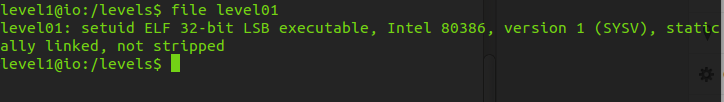
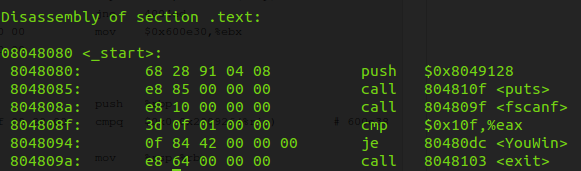
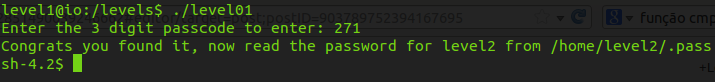

O “IO Smash The Stack” é um conhecido wargame da Smash The Stack Network. Um “wargame”, na cultura hacker, é o nome dado a um jogo contendo desafios de segurança, geralmente divididos em níveis (levels), no quais se deve explorar alguma vulnerabilidade para conseguir acesso aos próximos níveis. Obviamente, a dificuldade dos desafios evolui a cada nível, o que torna as coisas mais divertidas.
Eu particularmente gosto bastante do IO Smash The Stack por ser um wargame mais “maduro” e realístico, bem diferente da maioria dos wargames que se vê por aí…
Para começar a brincar, temos que utilizar de um ssh-client para nos conectar ao primeiro level (o login e a senha para o primeiro level é informado na página do wargame):
___ / /\
/__/\ / /::\
\__\:\ / /:/\:\
/ /::\ / /:/ \:\
__/ /:/\/ /__/:/ \__\:\
/__/\/:/~~ \ \:\ / /:/
\ \::/ \ \:\ /:/
\ \:\ \ \:\/:/
\__\/ \ \::/
\__\/
ssh level1@io.smashthestack.org
password: level1
Logo que conectamos ao wargame, estaremos em um diretório com vários arquivos README (de diferentes formatos), que nos informam as especificações para jogar.
Navegando pelos diretórios, chegamos a pasta “levels” (contida na raiz), e assim iniciamos o level1. Listando os arquivos do diretório, vemos que a única referência ao level1 é um ELF (32-bit) executável:
Ao executá-lo, o programa nos pede um passcode de 3 dígitos para que “algo” aconteça. Caso os 3 dígitos informados não sejam o passcode esperado, o programa é simplesmente finalizado.
A única certeza que temos é: Algo está escondido nesse arquivo ELF.
Um arquivo ELF nada mais é que um formato padrão de arquivos executáveis, códigos objetos, core dumps, shared objects. É utilizado desde 1999 como o formato padrão de arquivos binários para sistemas Unix e Unix-like.
O arquivo ELF do tipo executável é essencialmente um object file pronto para ser executado, daqueles que obtemos com “gcc codigo.c -o codigo”. Todo arquivo ELF é dividido em headers e sections. As sections estruturalmente variam de acordo com o tipo do arquivo ELF, que no caso de um executável, temos algumas interessantes para avaliação:
.text - Descreve as instruções do programa executável. .symbol - Tabela de símbolos utilizada (importada e exportada). .rel* - Onde os símbolos são utilizados .data e .data1 - Onde ficará as variáveis globais .rodata - Onde geralmente contém strings constantes (read-only).
Um bom programa para análise de sections é o objdump, que faz parte da coleção de binários disponibilizados pela GNU Binary Utilities (ou binutils). Além de nos prover informações interessantes das sections de um ELF, ele também permite a opção de disassembler para converter códigos de máquina em códigos de montagem. Com essa opção, estamos aptos a “enxergar” o executável na sua forma assembly.
Voltemos ao ELF do desafio, utilizando o disassembler do objdump (objdump -d level01):
Na imagem acima, o código assembly obtido do disassembly da section .text, parece nos dizer tudo que é realizado desde a execução ao término do programa.
Primeiro é dado um PUSH de um endereço 0x8049128 na stack. Em seguida é feito uma chamada de uma função, a função “puts” (que exibe algo na tela… você deveria estar imaginando que fosse o texto pedindo que eu digitasse o passcode de 3 dígitos). Na terceira linha, novamente um call, dessa vez de um fscanf que provavelmente é a função responsável pela leitura do passcode que eu digitar.
Na quarta linha, temos uma comparação CMP de um valor em hexadecimal com o conteúdo do registrador EAX. E na quinta linha, um jump do tipo “je” (salte para “You Win” de endereço 80480dc se os valores comparados em CMP forem iguais). A instrução CMP do 8086 combinada com um jump é uma conhecida forma de controle de fluxo no assembly, que permite com que o programa tome certas decisões, podendo alterar o seu curso de acordo com o resultdo da comparação. Caso a comparação não seja satisfeita, o jump não é feito, e caimos na sexta linha em que é chamada a função EXIT para sair do programa.
Após a análise do código assembly não é preciso muito para entender que o passcode é o valor decimal de 0x10f, já que digitando esse valor conseguiriamos sair do CMP em direção a função “You Win”. O valor decimal correspondente a 10f é 271.
Entrando com 271 como passcode recebemos a mensagem:
Um shell é aberto, e agora temos permissão para acessar a senha do level2 em “/home/level2/.pass”.
comments powered by Disqus